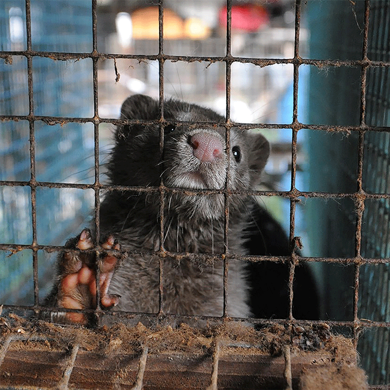

Faux Facts

Animal rights is the ethical belief that animals deserve to live free from exploitation, abuse, and unnecessary suffering, and that their interests should be considered alongside human interests. Unlike general animal welfare, which focuses on minimizing harm while still using animals for food, clothing, or research, the animal rights perspective asserts that animals have inherent value and should not be treated as property or commodities. This philosophy underpins campaigns against practices such as fur farming, factory farming, animal testing, and entertainment that involves animals, advocating instead for alternatives that respect their autonomy, natural behaviors, and well-being.


Fur farms are industrial facilities where animals are bred and raised specifically for their fur, which is used in clothing and fashion products such as coats, hats, and trim. The animals most commonly raised on fur farms include mink, foxes, raccoon dogs, and sometimes chinchillas. Unlike animals raised for food, these animals are kept solely for their pelts, meaning the quality of their fur is the primary concern. On many farms, the animals are housed in small wire cages arranged in long rows inside sheds or outdoor structures. Because these species are naturally wide-ranging and active in the wild, the confined environment of a cage can be very different from their natural habitat.
The conditions on fur farms can have significant effects on animal welfare. Animals in these facilities often have limited space and little opportunity to perform natural behaviors like running, digging, swimming, or hunting. As a result, some animals develop stress-related behaviors such as pacing, biting the cage bars, or self-mutilation. At the end of their lives, the animals are typically killed in ways intended to preserve the fur, such as gassing or electrocution. Critics argue that these practices raise serious ethical concerns about animal treatment, while supporters of the industry often argue that farms are regulated and provide livelihoods for farmers. Because of these debates, fur farming has become a controversial issue in many countries, with some places banning or restricting the practice altogether.